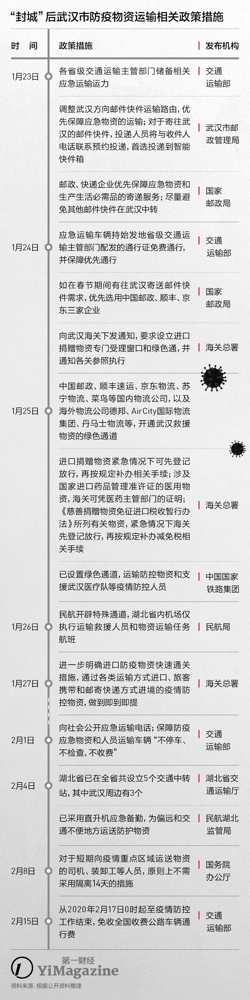
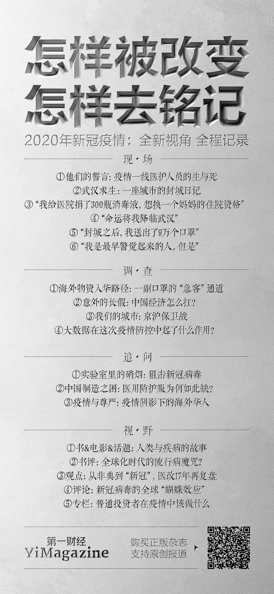

京东武汉战事：金银潭医院500米处，为机枪手递上子弹 | 深网
原文链接 备份链接 作者 | 孙宏超 编辑 | 康晓 出品｜深网·腾讯小满工作室 欢迎下载腾讯新闻APP，阅读更多优质资讯 _编者按：_牵一发而动全身，面对疫情，需要中国全行业上下游企业携手共度难关，深网推出《共克时艰》系列报道，是为第一 …

2020年1月23日以来，基金会和志愿者联动起来，散落在全球的医疗物资很快浮出水面，但如何到达焦虑的医生手中，是个复杂的过程。2020年3月，新冠病毒在全球蔓延。
记者 | 郭苏妍 王一越 邓舒夏 叶雨晨
编辑 | 张云亭
1月23日，武汉封城。
封城后，在洛杉矶从事航空货运代理工作的徐江涵逐渐摸索出了一条最快速的运输路径。第一批物资是从洛杉矶飞往北京清关以后，再从北京飞往长沙，最后从长沙运送到武汉当地医院的手里。第二批物资他选择了海南航空从洛杉矶直飞长沙的航线，再从长沙运往武汉。“结果证明这是最快速和高效的运输方式，从起飞到交付一共只花了不到20个小时。”他说。
但这个过程没有想象中那么顺利。当徐江涵的一部分物资捐赠者填写为某个同乡会或某个微信群时，他被某家航空公司告知捐赠主体不符合捐赠人资格，无法为其提供免费运输。他急得跟航空公司起了争执，“清华北大的校友会是人，同乡会老乡会就不是人？凭什么他们不配获得捐赠资格？”但即便他提出要自己支付这一批物资的运输费用，还是遭到了对方的拒绝，“只要不符合免费运输的要求，连订舱都不让你订。”
当微博上刚开始有医生向社会发出物资告急的呼声，最快行动的是徐江涵这些民间捐助人。得益于工作经历，他成了一个小捐助团体的核心。而更多像他这样的民间捐助团体在疫情初期，相对于其他渠道来说，发挥了快速高效输送物资的作用。
封城这天，徐江涵发了一条微信朋友圈，表示愿意为疫情相关的捐赠物资协助提供免费跨境运输。这很快引来了包括清华同学会、北大同学会以及各大老乡会等民间组织的问询，这些社会捐助人通过亚马逊、eBay、药店网站等渠道，采购的口罩、防护服、护目镜等医疗物资，将收货地址填写为徐江涵提供的接收仓库，再由徐江涵负责接下来的货物包装、运输航班、出境和入境清关，最后交付到接收单位手中。
满员500人的微信群徐江涵起码有10个，要应付来自四面八方的海外华人数量不等、型号各异的物资捐赠是极具挑战性的。他位于加拿大温哥华和多伦多的仓库资源不够，只好再找了些志愿者在纽约和芝加哥等地临时搭建起几个接收仓库。在初步整理了物资类别、数量、订单号、捐赠人信息以后，志愿者会将这些物资归类和整合。“航空公司的仓容有限，我们要尽量控制体积，比如把物资合箱，这背后是很大的工作量，不是人们理解的送机场那么简单。”徐江涵向《第一财经》杂志解释。
社会捐助人中拥有医疗背景的成员制作了一本分类指南，志愿者根据这份指南来分辨哪些物资是合格产品，再把医用和民用物资区分开来，并做好对应的Excel表格。等到徐江涵向航空公司订舱，便按照各个仓库提供的货物尺寸和重量做好航空提单，再随同这些货物运输到机场，最终交到航空公司手里，美国部分的运输才算结束。
等航班落地，由徐江涵填写的接收方湖北省慈善总会或国内的货运代理公司会接手处理国内部分的清关事宜，随后再把货物直接交付到医院手里。清关的过程需要填写捐赠意向书和3份表格，捐赠人的表格、受赠人的表格以及货物清单都需要捐赠人和慈善总会盖章，才符合走海关绿色通道的要求快速通关。
“当所有的基金会和志愿者发动起来，散落在全球的医疗物资库存很快就浮出水面了，但这些物资怎么进入国内，是物理层面的难题。”小鹰科技CEO张柱对《第一财经》杂志说，他曾在苹果公司、阿里巴巴和京东做过物流系统的研发。1月25日，张柱加入了包括壹基金在内的十几个基金会微信群，志愿为它们提供国际物资进入国内的通道设计、协助清关、保税区资源对接甚至是交付给国内物流团队等流程环节的帮助。
据张柱介绍，一般让物资进入中国有5种方式，分别是企业对企业的国际贸易、个人对个人的直邮、跨境电商、保税备货和其他（邮寄小包、买手或旅行团带货）。张柱在协助基金会做物资分类时，会帮个人捐助者找到对接医院的联系方式，并确认物资的有效性及是否达到医用级别，再让对方去最近的邮局签一张邮寄单，把物资邮寄给医院。面对企业捐赠者，他则会帮对方跟相关机场与国际贸易公司做对接，协助捐增者确认对方是否具备医疗器械的经营资质，并完成通关及交税的过程。
“很多个人捐赠者会感到无力，比如个人无法直接对接海关只能走邮包，又比如国内接货的企业最少要具备二级医疗器械经营资质。”张柱说。而对于公司捐赠者来说，“要找到足够的物资、签合同、付定金、寻找合适的对接公司、预订航班轮船的仓位和板位，准备报关清关文件、提货运输、开设免税证明等等，没有达到一定体量的公司做起来会很难。”
在这个过程中，张柱慢慢搭建起了一个“联盟”，“联盟”中有诸多拥有接货资质的贸易公司、当地政府人员、航空公司、海关沟通人员、申请免税协助人员等等。他的微信群也从一开始的十几个基金会，扩充到了100多个美国网友群、加拿大网友群等500人微信群。活跃的群约有五六十个，张柱每天抱着手机睡觉，醒过来就对着几万条微信消息挨个答疑。
为了让对接工作变得更高效，张柱停掉了小鹰科技原本的跨境电商服务，下架了所有商品，把通道让给救援物资。30人组成的志愿技术团队在原有商城系统的基础上开发了一个C2C平台的微信小程序，这个平台负责让捐赠者与医生实现直接对接，捐赠者在找到物资后，医生会负责确认物资是否达标有效，同时，医院发布的急需物资种类也能够让捐赠者提前判断接收方的实际需求。由于该平台已在公安部做了ICP备案，每一笔捐赠的信息和照片都会经由小鹰科技的工作人员审核之后再开放给医院。“北美的一批学生捐助一次大概有4吨物资又挤进来，其中医用级别的居多。这样对医院来说可以尽可能避免无效捐赠，而大部分捐赠者也都能拿到签收回执。”张柱说。
与此同时，借助跨境电商的方式让捐赠人与接收人直接对接几乎算得上是5种国际运输方式中最高效的通道。据张柱介绍，由于中国跨境电商的体量较大，大宗商品有一个专门的跨境电商通道，海关为跨境电商商品建立了专门的国际邮关——9610直邮和1210直邮，这两条通道在灾难时期会很干净，因为没有人再去购买海外的尿不湿等生活类商品，它们就变成了高速通道。每逢遇到灾难，基本都会形成大宗商品的运输阻塞，飞机、火车、轮船都没有足够的备份运力来保障运输。“如果不找到一个快速通道去消化杂乱无章的捐赠行为，全都堆到大宗贸易，湖北的整条高速可能都会堵死。”他说。
1月24日晚，海关总署向武汉海关下发通知，要求设立专门受理窗口和绿色通道，第一时间为相关物资办理通关手续，对进口捐赠物资实施快速验放。1月27日，按照特事特办原则，海关总署进一步印发通知明确进口疫情防控物资快速通关措施，对专门用于疫情防控治疗的进口药品、医疗器械等，包括通过各类运输方式进口、旅客携带和通过邮寄快递方式进境的疫情防控物资，做到即到即提，确保通关“零延时”，以最短的时间投入疫情防控。
许多海外民间团队几百人一起购买打包的物资通过大宗商品物流进入中国以后，反倒进不去武汉，物资通过拥有运输资质的卡车运入武汉以后，具体去到了哪些医院也很难追踪，全凭自觉。跟大宗贸易这种需要慈善总会接收证明的传统通道相比，跨境电商作为个人国际包裹直接归属中国邮政管辖，无需再向海关提供证明救灾的免税凭证，同时拥有最高的配送优先级。“国际邮包涉及两国公民的通信权和外交，除非有确凿证据证明里面有违禁品，否则不可能被查扣。而这个最后一公里的运输会由邮局负责，如果邮局运力有限，它也可以以邮局名义去征用所有可以配送的车辆。”张柱解释说。
不过，“就算大宗商品的干线运输、国际运输、通关速度都显著变快了，末端配送的问题还是解决不了。”张柱发现疫情期间湖北当地政府的各项政策持续变化，先是封城，再是私家车禁行，许多救援物资都卡在最终交接的“最后一公里”。

最后一公里
等到物资到达武汉后，民间捐助人们才意识到这个通关的过程还远未结束。
1月27日晚，湖北省召开新型冠状病毒感染的肺炎疫情防疫工作例行新闻发布会。时任湖北省委副书记、武汉市委书记马国强强调，所有捐赠的物资一定要通过红十字会，以保证捐赠物资和资金的使用能够及时准确登记在案，统一归口，避免在疫情防疫防治过程中，由于混乱被人钻空子。
红十字会一度成为本次民间物资运输的舆论中心。一方面当前武汉封城封路，物资运送往往需要红十字会及接收单位同时开具证明。这项政策是为了防止不合格的物资蒙混过关，或者口罩以捐赠的名义流入市场销售，但同时也降低了民间捐助的效率；另一方面海外物资入境需要红十字会的接收证明才能减免税收，否则口罩价格将变得远超市场价。但红十字会本身运作模式的低效不仅让许多捐赠人意识到自己的物资即便合格也无法及时到达医院手里，更重要的是，它也不能公正地分配物资到更急需的医院手中。
“封城后，政府对进出武汉的车辆把控很严，不能随意进出城，这导致外面的物资进不来，1月25日一早我们去送口罩的时候，很多医疗单位已经没有口罩了。”李青告诉《第一财经》杂志。他是武汉一家零售公司的供应商，拥有自己的车队，当地疫情变得严重后，除了向武汉运送水果、蔬菜等商品，他还自掏腰包购买口罩、防护服等物资，捐往武汉和周边城市的医院。后来李青也帮助一些企业将捐赠的物资送达医院。至于为什么没有选择将物资给到红十字会，他的回答是“红十字会没有那么多工作人员去配送的，这是突发事件，他们的人员有限”。
一些企业在捐赠医疗物资时也会尝试避开红十字会“中转”以提高效率。石磊为所在的公司在7天之内采购到了几十万只口罩，并提前通过多个渠道与相关部门打好招呼，寻找愿意前往湖北“有去无回”的物流人员运输货物，将这批完全符合医用标准的物资送到了湖北省内仅次于武汉市的疫情重灾区黄冈，接收单位是黄冈市疫情防护中心。“从找口罩到找物流再到找接收单位，并确保每一步都能按照计划进行，这个过程非常辛苦。7天时间，我和我的同事打了超过1000个电话。”石磊对《第一财经》杂志说，“现在去往湖北的物流，去一个少一个，因为到达湖北返程后就要直接隔离14天，司机本身也存在感染风险，‘有去无回’的，特别悲壮。”
刘亚出从1月23日开始在俄罗斯采购符合医用标准的3M N95医用级别的口罩以及符合欧洲标准FFP2、FFP3的口罩。“之前没有预料到疫情会到这种程度，更没有预料到医疗物资会瞬间短缺。”刘亚是上海俄尚贸易有限公司中俄国际物流部负责人，了解跨境物流的相关流程和手续，为了加快医疗物资到达医护人员手中的速度，她一边用私人资金全款垫付采购医疗物资的费用，一边安排物资发回，并通过自己的人脉寻找理想的接收单位。
寻找物资和接收单位都是极其耗费心力的工作。国内和俄罗斯存在5个小时的时差，俄罗斯当地的工作节奏较慢，确认每个订单都需要大量的时间和精力。为了确保采购的口罩都是合格的，她做了许多的功课和比对筛选，以及俄汉英三语翻译的工作。在寻找对疫区有捐赠意向的企业以及慈善机构来接收口罩的过程中，她还碰到许多想拿货转手卖掉的商家，“没什么办法能让这些困难变得容易一点，只是看看武汉那些医生的照片和视频，看看确诊人数的增长数字，除了继续找，别无他法。”刘亚对《第一财经》杂志说。
截至1月31日，她一共向国内运送了超过5万个口罩，还有10万个不同型号的口罩订单已经下单等待收货，接收单位包括浙江疾控中心、狮子会上海分部以及部分上海市内医院等。一次医疗物资从采购付款、提货发出、再空运到达国内的时间，一般在3天左右，海关绿色通道开启后，整个流程变得更快了。为了让医疗机构和接收单位能够及时确认物资的资质，刘亚在采购时还会要求厂家和供货商提供包括医疗证等在内的所有相关证件，因为俄罗斯做公证件需要2到3天，耗时太久，她就在俄罗斯当地找了拥有俄汉翻译家资质（直接为公证处翻译文件资质）的朋友，及时将相关文件翻译好中俄对应版本，以免在接收过程中发生时间损耗。
对“透明度”的不信任，同样存在于民间捐助。起初李青加入了许多大大小小的民间捐助群，但最后都退群了，只对接自己团队的资源。“觉得（大群）很复杂，不如几个朋友做点力所能及的事情。”
杨志新是多个武汉捐助群的群主，曾看到过一个西雅图留学生包机运送物资到武汉的消息，在他看来这很可能是一个假消息——包机需要至少300万元人民币，并且需要征得机场的同意，办理手续就需要至少15天的时间，但现在机场没有接收到这方面的信息。“我们验证不到这个信息也不敢信，但不排除之后对方可自证。”杨志新说。
许多明星的后援会粉丝团甚至都表现出了极高的执行能力，从发起捐款到筹集物资并定向输送的过程都会由这些自发群体全程把控。一个由吴亦凡粉丝组成的名叫“吴亦凡梦想行走团”的50人规模的公益团体就成功向湖北省咸宁市结核病防治院捐赠了10万双丁腈手套，从1月28日开始筹划到1月30日物资到达医院，一共只花了3天时间。据该公益团成员毛儿介绍，团队在跟湖北咸宁的志愿者取得联系后，首先与接收医院提前沟通了其计划采购的丁腈手套是否符合医用标准，在得到确认后，就开始动用一切力量采购物资、查询可以通行的途经高速、寻找能去往咸宁的物流，与志愿者沟通协助引导司机在疫区外卸货，然后将物资交由志愿者来负责完成到医院的交接。毛儿表示2月12日，还会有一批德国的3M 8810型号及FFP2和FFP3标准的口罩空运过来（后改为385件防护服）。
虽然民间组织利用多渠道运送物资目前看来是一种高效的方式，更多问题还在于捐赠信息难辨真假、各路关卡放行、医院需求信息的对接等，因此，哪怕是民间力量，也需要一个有力的协调平台。
据某基金会资深工作人员陈羽介绍，2008年汶川地震的救援早期也发生了许多资源浪费，但中后期就学习了经验。在大灾难面前，重要的是建立网络，比如防控指挥部、红十字会、卫建委、医院之间建立数据对接，而防控指挥部、志愿者与民间机构之间也要建立信息对接。此外，那时的民间社会组织可以通过挂靠腾讯公益、壹基金等来筹款捐赠进入汶川。
“区别在于目前的武汉被封城了，志愿者无法前往现场建立数据对接，湖北本地的社会组织也不够发达。而因为指定了接收捐赠的机构，腾讯等慈善企业无法挂靠筹款，民间物资很难有渠道送达疫区。”他向《第一财经》杂志解释说。
社会舆论的声讨改变了武汉红十字会一度调度物资阻塞的局面。从1月31日开始，九州通医药物流公司正式入驻红十字会的防控物资仓库，负责物资的物流管理环节，一些符合标准的物资甚至可以达到两小时完成入库到出库的速度。所有物资的调配发放仍由防控指挥部相关单位负责，医用物资由市卫健委统一分配，非医用物资则由市发改委统一调配，两个单位均根据九州通上报的统计数据向九州通下达分配指令，最后由邮政完成配送。
市场的力量
由国家统筹规划的防疫救灾部署需要时间，例如临时征用全国范围内所有具备正规资质的口罩、护目镜、防护服等医疗物资生产工厂，需要至少14天左右的时间才能完成从接管、生产线恢复、增加设备和产能、商品合格标准测试、数量统计和物资分配等多项环节。
正如张柱所说：“国家行为的前期响应时间不像个体这么快，中间会出现一个窗口期，这时候市场和个人行为的流通性更好、更有效，但疫情发展到中期、后期甚至拐点以后，一定是国家的力量更强，因为救灾物资是需要批量供给的。”
这也部分解释了为什么虽然财政部紧急下拨了10亿元补助资金支持湖北疫情防控，疫情发源地及重灾区武汉乃至整个湖北省的大大小小的医院仍在其后的十几天曾有过缺乏医用口罩、防护服等一系列物资的情况。
工信部相关负责人曾在1月29日回答媒体提问时指出，中国是全球最大的口罩生产和出口国，年产量占全球约50％，而中国口罩的最大产能是每天2000多万只。但当时产能仅恢复了40%，达到800万只，海外医疗物资的援助仍旧至关重要。
在民间组织零散物资捐赠到国家统一接手的过程中，不管是小鹰科技这样的创业公司，还是阿里巴巴这样的大公司，市场力量在这个过程中的作用不容忽视。相比大量的民间个人和团体捐赠者来说，这些公司在物资的品质把控、达标情况等方面的专业性让它们能更快参与其中。
从1月20日钟南山表示新冠肺炎病毒“肯定人传人”开始，全国线下药店和线上平台迅速出现了口罩全面断货的趋势。对口罩这样的非日常生活必须的商品来说，遇上春节工厂全面停工的时间档口，短缺形势的加剧几乎是必然的。
别样海外购除了借助跨境电商平台的优势，协助做海外机构捐赠的数十批近百万个的口罩出入境清关运输外，也开始满足普通消费者的需求。1月21日，别样在美国当地的团队就协调好山姆会员店、美国知名连锁零售店Walgreens等合作商家，并立即在App内上架了N95型防护口罩及其他防护用品的货源，所有商品均通过跨境电商渠道运输直邮到消费者的手中。
口罩刚上线即销售一空，美国线下超市、药店的口罩也陆续开始出现断货迹象。“到1月23日、24日的时候，我们发现全球市场上的现货已经很少了，尽管我们发动员工去线下找货，但仍要确保渠道和货源可靠。”别样海外购CEO沈学华解释说，由于美国直邮的口罩从采购到运送至用户手里最快也需要10天左右的时间，别样增派了物流团队的人手，员工整日待命。根据沈学华提供的数据，到目前为止，别样平台一共卖出了超过7万个N95口罩。
由于2月中上旬中美航班的大规模取消，运力受到了很大的影响，物流成本急剧升高，“但这些我们最终都自己消化了，不仅按照采购的原价销售，还对海外运输的费用有了每单5至6美元的补贴。”沈学华说。
网易严选迅速于1月21日成立防疫专项应急小组，集结商品开发、物流、采购、品控、产品、市场等多部门人员，联合供应商加量生产、紧急调货。当天，网易严选就一共上线了5万份防护用品供全国用户免费领取，截至1月21日24时，网易严选的数据显示，武汉、上海、杭州、深圳、北京等城市口罩、免洗抑菌喷雾、医用级酒精片等防护用品的需求量呈现出爆发式增长，紧缺防护用品单日需求增长超过5000%。截至2月8日，网易严选先后4次上线近20万片防护口罩免费专供湖北用户，并紧急调集上线了5万份一次性酒精片、洗手液、免洗净手喷雾等4款防护用品，供全国用户免费领取。同时，严选一共调集了面向全国消费者的100万件防护物资供应。

网易严选日本供应商为中国供货。
1月30日起，阿里巴巴向全球采购的N95口罩等医疗物资陆续从印度尼西亚、韩国、俄罗斯等国运抵上海浦东国际机场，随后直接运送到湖北武汉、浙江温州等物资紧缺的医院。从25日设立10亿元医疗物资供给专项基金到物资到位，一共花了5天时间。
由于医疗物资从海外市场直接采购，而不同国家对医疗物资的执行标准不一，采购过程需要攻克的一项重要任务就是迅速对应出国内医疗机构需物资的海外采购标准。阿里巴巴找到了德国TV莱茵、英国Intertek天祥集团、美国UL安全试验所等在内的12家质检机构合作，邀请合作方加入到供应商资质审核、海外实地校验、国内入仓验货、留样送审等整个环节的工作中。
瑞士检测机构SGS的项目负责人徐莉佳在1月26日晚上接近11点时接到了一通来自阿里巴巴的请求协助的电话后迅速作出反应。第二天，SGS内部成立了一个技术专家组，开始制定海外现场工作的要求，包括海外供应商审核标准以及符合疫情所需的防护面罩、口罩、防护服、护目镜等各类防护用品的外观检验标准，并明确对标的海外执行标准，以便制定清晰的采购要求。20个小时过后，SGS完成了第一轮标准起草工作并翻译成英文，交由SGS全球团队执行。28日，SGS派驻几组检验专家前往仁川、京畿道和金浦等地，陪同阿里巴巴采购团队现场了解供应商生产情况，并在现场封存样品。随后，采购区域还扩展到了日本、土耳其、摩洛哥、乌克兰、哥伦比亚、芬兰、德国等地区。
海外实地校验是品控的关键环节。例如，要确认供应商现场的资质证书是否与其提供的电子版本一致，有些期货采购的订单则要生产设施与生产环境符合要求等，这些工作都需要在现场完成。据徐莉佳对《第一财经》杂志回忆，土耳其的一单物资就是质检团队到现场后发现与最初沟通的产品相比低了一个等级，而且是由一个家庭小作坊生产，工人在操作时甚至没有任何卫生防护措施，阿里巴巴最终取消了这一单的合作。与此同时，国内入仓环节也至关重要，据天猫国际商品部相关负责人介绍，SGS国内的验货人员就曾经拦截了一批缝制有瑕疵的手术服以及外箱和内盒破损进水的产品。
“现在的航班也没有能力再接收更多的货物了，航空运力的减少加上大量企业参与进来做捐赠及采购事宜后，物资的增长速度一直在上升，我们看到航空公司也已经出现货物积压的现象。”徐江涵说。这也是为什么从2月15日开始中美航班停航对民间物资的运输影响并不算显著。除此以外，全球市场的医疗物资存货几乎已经消耗殆尽，短时间内难以快速补充更多的采购货源。
20多天过去，国家调配物资有了反馈。
上海在经历了长达十几天的民用口罩短缺之后率先于2月3日恢复了部分口罩供应。上海居民可以按照一份药店清单选择离家最近的网点排队购买口罩。根据上海雷允上平顺路店经理的说法，这家药店由华氏大药房、当地街道和商委统一指定对口3个居委会，每天商委会根据每个片区的情况调拨口罩额度，再由华氏大药房进货，并根据每个居委会的额度按比例分配。一开始每天大约到货1600至2000个口罩，而在购买从排队改为预约制以后，到货量逐渐增加到了4000多个，整体上供应处在持续恢复上涨的过程中。据该药店经理介绍，每次进货的口罩数量、样式和价格均不相同，有0.56元一只的，也有1.9元的日本进口口罩，还有1.98元的白色口罩。每天由居委会派人到药店取货，再回到社区统一按照预约情况分发。
而在2月13日的国务院联防联控机制新闻发布会上，工业和信息化部消费品工业司副司长曹学军表示，截至2月12日，国内生产企业累计向湖北运抵医用防护服72.67万件，医用隔离面罩和隔离眼罩35.84万件，负压救护车156辆，呼吸机2286台，心电监护仪6929台，全自动红外测温仪761台。国家发展改革委产业发展司一级巡视员夏农则指出，截至2月11日，全国口罩产能利用率已达94%；特别是一线防控急需的医用N95口罩，产能利用率已达到128%。
以全球化市场为基础的电子商务在过去10年的发展在此次民间捐助行为中发挥了重要的作用。混乱的窗口期会过去，但对于一个国家来说，整个公共防疫系统所出现的问题才是接下来要整治的方向。
（应采访对象要求，文中李青、
杨志新、陈羽、石磊为化名）

本文为节选，全文收录于《第一财经》杂志2020年2&3月合刊《新冠肺炎抗击实录》。作为商业杂志，我们力图围绕商业、城市管理、生物科技等多个角度对这次公共卫生事件展开记录、复盘与反思，以完成一本商业杂志的职责。
在本期杂志中你将看到：
****你可通过扫描下图中下方的二维码或点击顶部banner及底部阅读原文进入微信小店预购本期杂志。***
本文版权归第一财经所有，
未经许可不得转载或翻译。

原文链接 备份链接 作者 | 孙宏超 编辑 | 康晓 出品｜深网·腾讯小满工作室 欢迎下载腾讯新闻APP，阅读更多优质资讯 _编者按：_牵一发而动全身，面对疫情，需要中国全行业上下游企业携手共度难关，深网推出《共克时艰》系列报道，是为第一 …
原文链接 备份链接 【财新网】（记者 丁捷 综合）2020年2月第1天， 新型冠状病毒确诊患者数量已突破万人。仅次于武汉的重疫区——湖北黄冈下达“史上最严出行令”，2月1日起，严格控制市区居民出行。每户家庭每两天可指派1人上街采购生活物 …
原文链接 备份链接 【财新网】（记者 钱童）一面是全球企业和机构各类物资支援，一面是医院领不到物资公开向社会求援，防疫物资到底在哪里？多位工厂、捐赠和采购方人士告诉财新记者，目前确实面临瓶颈：国内生产或者捐赠的物资被接管，统一调配，多有 …
原文链接 备份链接 *************▲*************1月30日，海军军医大学医疗队三病区医护人员正在穿戴防护用具。（新华社 陈晨/图） 全文共*3590*字，阅读大约需要7分钟。 钟南山表态的前两天，政府部门连夜召 …
原文链接 备份链接 来源：腾讯新闻《潜望》 栏目 作者：王潘 2020年元旦前后，武汉新型肺炎的新闻曝光，小米区域拓展部副总裁、武汉总部总经理刘国俊要求团队尽快备好口罩、药物和体温测量仪等可能有助于武汉当地员工防御病毒的措施。 “原本小米 …